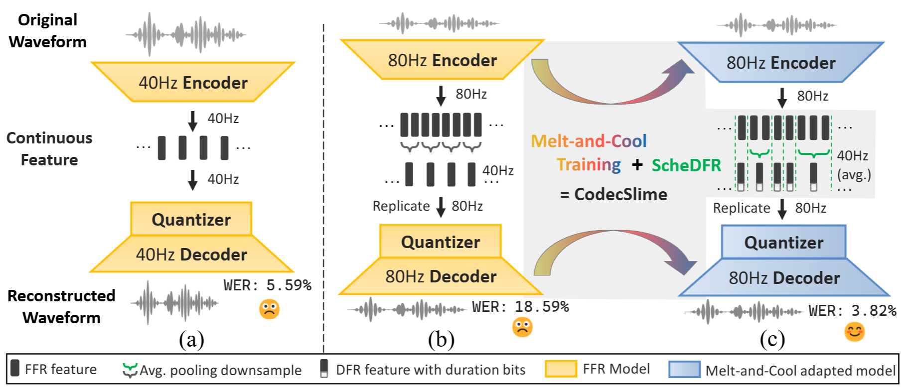
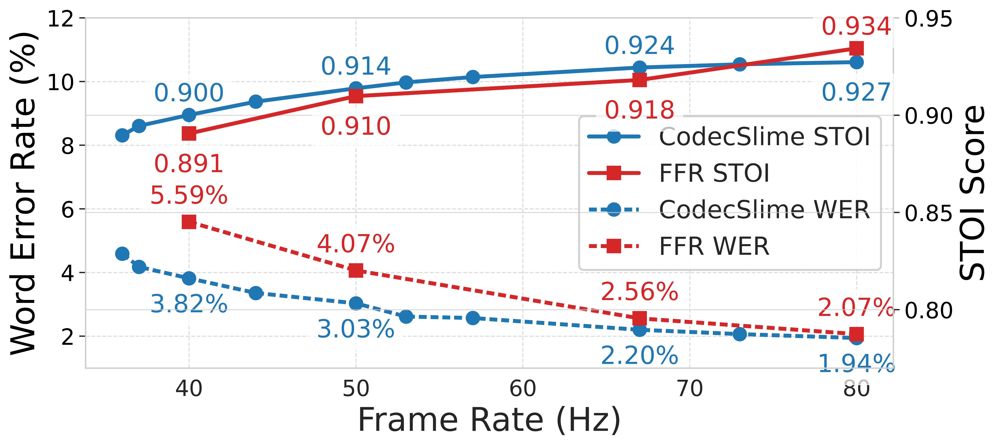

CodecSlime: Temporal Redundancy Compression of Neural Speech Codec via Dynamic Frame Rate
Anonymous Authors
Submitted to NeurIPS 2025
Neural speech codecs have been widely used in audio compression and various
downstream tasks. Current mainstream codecs are fixed-frame-rate (FFR), which
allocate the same number of tokens to every equal-duration slice. However, speech
is inherently non-uniform in temporal information density. As a result, many tokens
are wasted on steady-state segments like long vowels and silences. To address this
mismatch, we present CodecSlime, a plugin-style method for compressing tempo
ral redundancy through supporting dynamic frame rate (DFR) on neural speech
codecs for the first time. Our method is unsupervised and architecture-agnostic,
combining two key innovations, ScheDFR and Melt-and-Cool, for adapting infer
ence and training, respectively. When integrated into a typical VQ-GAN codec
backbone and operating at 40Hz DFR (≈600bps), the reconstruction WER of
CodecSlime is reduced by up 46% relative to conventional FFR baselines with
the same model architecture and similar bitrates, while other metrics are also
competitive. CodecSlime also enables flexible trade-offs between reconstruction
quality and bitrate: a single model supports inference at multiple frame rates and
consistently outperforms FFR models at the corresponding frame rates.

Main Results: Speech Reconstruction
Testset: LibriTTS test-clean
We compare CodecSlime (40Hz dynamic frame rate, built upon BigCodec) with state-of-the-art neural codecs under ≈40Hz or ≈600bps using the LibriTTS test-clean datasets.
The results are downsampled to 16 kHz for fair comparison.
The demo presents audio samples from CodecSlime and baseline methods, showcasing its performance in temporal compression and reconstruction quality.
The numbers in parentheses after model names indicate the encoding bitrate (in kbps) of each model.
Specifically, CodecSlime's bitrate is decoupled into two components: content and duration, each explicitly indicated.
For evaluation setup details and comprehensive results, please refer to sections 4 and 5.1 of the paper.
[Show transcript]
Go and capture the first living creature you see, and bring him here to be patched to Cap'n Bill.
[Show transcript]
And yet I wish I could show you our cat Dinah: I think you'd take a fancy to cats if you could only see her.
[Show transcript]
What is that?" Ojo asked, for this seemed even more strange and unusual than a Glass Cat.
[Show transcript]
"Such cunning is not without its deviltry," exclaimed Hawkeye, when he met the disappointed looks of his assistants.
[Show transcript]
It is such a darling little thing; and-look now-is not it magnificent?
Testset: LibriSpeech test-clean
We also compared CodecSlime with TS3-Codec, a non-public SOTA codec model.
The audio samples of TS3-Codec are directly obtained from the authors.
Ground Truth
CodecSlime (0.57 + 0.08)
TS3-Codec (X3) (0.64)
TS3-Codec (X4) (0.68)
[Show transcript]
"There they stand," so I said, "and glare and hiss at my foes!"
[Show transcript]
"Hold him fast, my men! And as soon as I've had my coffee and oatmeal, I'll take him to the Room of the Great Knife and patch him."
[Show transcript]
Heaven—a good place to be raised to.
[Show transcript]
I will briefly describe them to you, and you shall read the account of them at your leisure in the sacred registers.
[Show transcript]
The bogus legislature numbered thirty-six members.
Generalization Ability: One Model For Various Average Frame Rates
This experiment evaluates how well a single CodecSlime model generalizes across different inference frame rates.
The same CodecSlime model, fine-tuned once at 40 Hz using ScheDFR, is tested under multiple runtime configurations.
In contrast, the fixed-rate FFR baselines are individually trained for each specific frame rate (40, 50, 67, and 80 Hz).
All models share the same backbone architecture (except for the CNN downsampling rate) and the same quantizer configuration (FSQ with 18225 codes).
As shown below, higher frame rates lead to lower WER and higher STOI for all models.
However, CodecSlime consistently outperforms all FFR variants, demonstrating strong generalization and eliminating the need for retraining at each target rate.

This interactive table compares audio reconstructions from CodecSlime and FFR baselines across varying inference frame rates.
The same CodecSlime model is used throughout, with only the frame rate adjusted at test time.
In contrast, each FFR variant is separately trained for its target frame rate.
We provide 3 utterances from LibriTTS test-clean set, and you can pick any of them through the buttons below.
Ground Truth
[Show transcript]
Go and capture the first living creature you see, and bring him here to be patched to Cap'n Bill.
This section compares different inference-time downsampling strategies on 80 Hz features, all reduced to 40 Hz.
The models differ in whether they apply ScheDFR for dynamic frame reduction.
Specifically, both the DFR foundation model (backbone + Melt) and the finetuned model (backbone + Melt + Cool) are evaluated with and without ScheDFR.
The fixed-pattern baselines simply merge every two adjacent frames, while the ScheDFR variants dynamically determine the downsample scheme using the DP-based scheduler.
Ground Truth
DFR Foundation Model (80Hz → 40Hz, w/o ScheDFR)
DFR Foundation Model (80Hz → 40Hz, w/ ScheDFR)
Finetuned Model (80Hz → 40Hz, w/o ScheDFR)
Finetuned Model (80Hz → 40Hz, w/ ScheDFR)
Ground Truth
[Show transcript]
Go and capture the first living creature you see, and bring him here to be patched to Cap'n Bill.
On Melt-and-Cool
This section illustrates the impact of different training strategies under a fixed inference pattern (still 80 Hz → 40 Hz).
All models are based on the same FFR backbone, and only differ in whether they include the Cool stage or the full Melt-and-Cool recipe during training.
Ground Truth
FFR Backbone Model (w/o Melt-and-Cool)
FFR Backbone Model (+ Cool (w/o Melt))
FFR Backbone Model (+ Melt-and-Cool)
Ground Truth
[Show transcript]
Go and capture the first living creature you see, and bring him here to be patched to Cap'n Bill.
DFR Scheduling: Case Study
The figure below visually illustrates how the CodecSlime DFR scheduler operates on the 237_126133_000002_000004 utterance from the LibriTTS test-clean set.
The top waveform aligns with the forced phoneme sequence, while the black-and-white bar below depicts the model's predicted frame-reduction pattern.
Here, the target downsample rate is 2, and the maximum downsample segment length is 4.
As shown, the scheduler adaptively merges frames in regions of long pauses or steady vowels, effectively exploiting temporal redundancy.
It also captures "counterintuitive" compression strategies across phoneme boundaries when beneficial for reconstruction.
This example highlights CodecSlime's strength: instead of relying on handcrafted heuristics, it plans downsampling directly from the learned representation space—enabling big bitrate reduction while preserving perceptual quality.
For more examples, please refer to the Appendix of our paper (in the supplementary material).